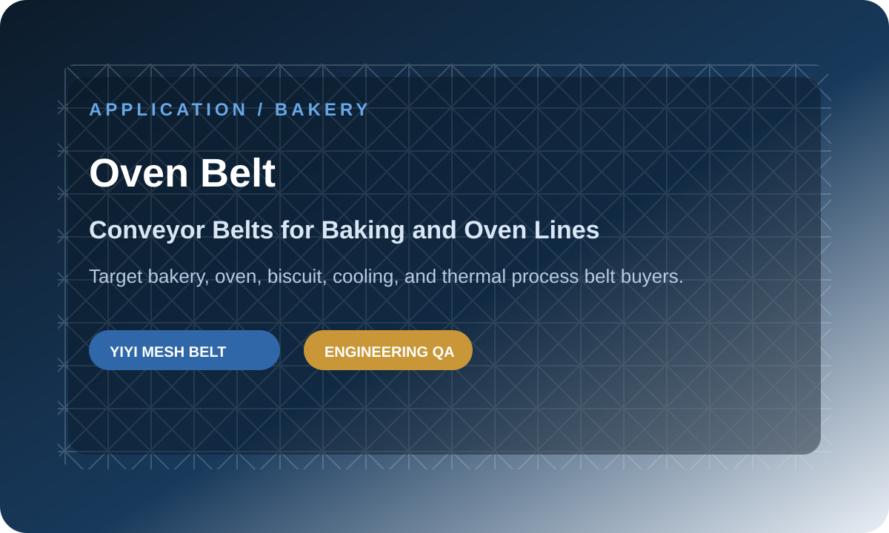
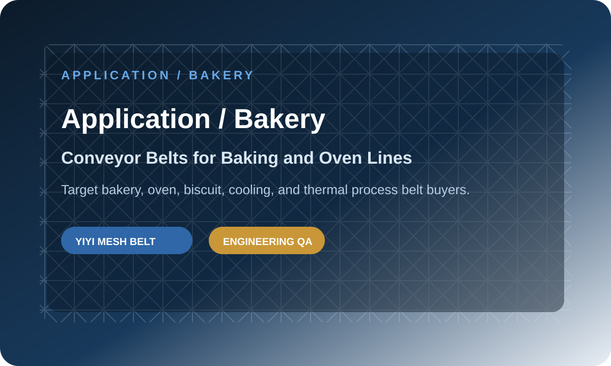

Conveyor Belts for Baking and Oven Lines
Target bakery, oven, biscuit, cooling, and thermal process belt buyers.
Direct Answer
Baking and oven line conveyor belts should be selected by temperature, product support, airflow, belt flatness, expansion behavior, and cleaning needs. Flat wire, balanced weave, compound weave, and chain driven belts are common options depending on heat, load, and product size.
This article explains the decision from a practical engineering view so buyers can prepare a clearer RFQ and avoid mismatch before production.



What makes this application different?
Baking Conveyor Belt projects usually fail when the belt is selected as a generic part instead of a working component inside a real production line. Product size, cleaning process, temperature, load, drainage, and drive design all change the correct belt answer. A line that looks simple from the outside can still require careful belt matching because the belt must support product movement every day without creating hygiene, tracking, or maintenance problems. For overseas buyers, the safest selection starts with the application environment and then moves into belt structure, material, edge design, and inspection requirements.
Which belt structures are usually considered?
The common structures include spiral freezer belts, self-stacking belts, flat wire belts, eye link belts, balanced weave belts, and chain driven belts. Each structure solves a different problem. Some provide more open area. Some provide stronger load support. Some improve airflow or drainage. Some offer better positive drive. We compare these structures against the actual line instead of forcing one standard product. This is important when the buyer is an OEM equipment builder, because the belt becomes part of the machine reputation after delivery.
What should be checked before production?
Before production, we check confirmed dimensions, material grade, wire diameter, rod diameter, pitch, edge type, sprocket or drum matching, and final inspection method. If it is a replacement project, we also check old belt wear marks and any broken area. If it is a new project, we prefer drawings and machine layout. A good quotation should reduce uncertainty, not only give a price. My Insights: In application and replacement projects, we usually do not judge the belt only from the product name. We first check the working condition, the drive method, and the failure risk. When a buyer sends clear photos, drawings, or old belt measurements, we can often find the real risk before production starts. This saves time for OEM teams, distributors, and factories that need stable repeat supply.
What specifications should be compared?
| Parameter | Engineering note |
|---|---|
| Application | Tunnel ovens, biscuit lines, cooling conveyors, thermal systems |
| Critical factor | Heat resistance, airflow, flatness, dimensional stability |
| Common belts | Flat wire, balanced weave, chain driven, compound weave |
| Buyer risk | Thermal expansion and poor support can deform the belt |
| Best RFQ data | Temperature range, product weight, oven length, drive method |
What photos or drawings should buyers send?
- Overall belt photo and close-up photo of the edge.
- Pitch, width, rod diameter, wire diameter, and edge structure measurement.
- Sprocket, drum, shaft, or drive engagement photos.
- Application photos showing product load, temperature, washing, or turning path.
- Failure point photos if the current belt is broken, deformed, stretched, or unstable.
Recommended internal links
FAQ
Can I choose the belt only by photo?
Photos help, but reliable selection also needs pitch, width, material, load, temperature, and drive information.
Should I replace sprockets together with the belt?
If sprocket wear, pitch mismatch, or jumping is visible, belt and sprocket matching should be reviewed together.
What should I send for a fast quotation?
Send drawings, old belt photos, dimensions, application details, material request, load, speed, temperature, and drive details.
Conclusion
My Insights: In final RFQ review projects, we usually do not judge the belt only from the product name. We first check the working condition, the drive method, and the failure risk. When a buyer sends clear photos, drawings, or old belt measurements, we can often find the real risk before production starts. This saves time for OEM teams, distributors, and factories that need stable repeat supply.
The best next step is simple: send your drawing, old belt photos, and working condition. We can confirm the belt family, material direction, key dimensions, and quotation path before production.